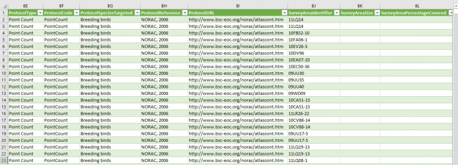

Blog
Project Objectives
We used bird count data to visualize the bird species that have been spotted in British Columbia on a map of the province, with information about which seasons each species has been spotted in different regions of B.C as well as the frequency in which they have been spotted.
Our goal was to design and create an interactive dashboard and embed it onto a website. The audience for the dashboard is beginner-intermediate birders who are familiar with identifying birds, or have access to bird identification resources (e.g., books, apps: eBird). Our project allows individuals to locate places in B.C. where a particular bird has been spotted, find patterns in the data (e.g., which season is the best for spotting a peregrine falcon in a particular area; best location in B.C. for spotting peregrine falcons, etc.) and make visual comparisons (e.g., number of times a bird has been spotted in coastal areas vs. inland). We imagine the user to be one who wishes to extend their personal knowledge about birds they see while they are outside birding or at home before or after a birding session. Keen birders could use the dashboard to make travel plans based on birds they wish to see.
Data Details
We used five datasets and data service for locating the different types of birds observed in B.C., categorizing birds into groups, linking up the coordinates with the B.C. regional districts, and creating the regional boundary within B.C.
The first dataset is called British Columbia Breeding Bird Atlas (2008-2012): daily observations [British Columbia Breeding Bird Atlas] collected by NatureCounts, a site of Birds Canada. The dataset has 41,412 records collected between 2008-2012 from individuals in B.C.

The dataset was messier and less informative than we expected. Before determining how much of the dataset to use, we decided to clean the incomplete records that did include essential information we needed, such as the bird name, the observation date or the observation count.
The geographic coordinates of bird records in the first dataset do not provide much human-readable location information. To identify the records in B.C. and enable users to filter by region, we used the BigData Cloud’s reverse geocoding service as an oracle which responded with location information per query. We compiled a dataset specific to the birds of interest. We used Bash and Wget to programmatically fire queries, which contained the parameters of coordinates in latitude and longitude, and language. Then, we fetched responses via BigData Cloud’s reverse geocoding API, and used Bash and Python Scripts for processing and merging the responses back to the first dataset. After going through the dataset schema, we decided to keep the information of the regional district and then manually clean the information. We deleted the location description that was too specific (e.g., Columbia Kootenay Mountain) or broad (e.g., Country in North America) and corrected the inconsistencies (e.g., Cariboo Land District and Cariboo). After mapping the coordinates of each record in the first dataset, we were able to locate and remove the records that are not in B.C. Eventually, the total number of records is reduced to 36,612.
We know that some birds are spotted more frequently than others by birders of all levels, so we wanted to add a frequency filter to allow users to visually analyze which birds are more likely to be spotted compared to others. There are many sources to select for this. We chose the list “Common Feeder Birds” for the North-West region of North America, compiled for Project Feeder Watch by Birds Canada and The Cornell Lab of Ornithology. In total we labelled 71 birds labelled “most common” and 224 labelled “less common”.
Due to the large number of species in the original dataset (295) we decided to group them by taxonomy. We sorted the species into groups based on the list used on the Merlin birding app, created by The Cornell Lab of Ornithology. This app is well known, used by experienced birders and a trusted source of information. In total there are 47 bird groups for this dataset. We then linked up these group categories with the species in the original dataset. The groupings will allow users to search more efficiently and encourage beginner birders to learn the taxonomic group species belong in.
We chose the choropleth map idiom to encode the quantitative attribute “Count of birds spotted” with the geospatial key attribute. Although Tableau supports worldwide cities, countries, and states, it does not provide the map data of B.C. regional districts and unincorporated area by default. Therefore, we added another data source, the digital boundary file (2016 Canada Census), from Statistics Canada. We removed all area records that are outside B.C., updated the regional district name such as from Skeena-Queen Charlotte to North Coast, and linked this table with the table of British Columbia Breeding Bird Atlas (2008-2012): daily observations with one-to-many relationship. This newly created table generates the choropleth map that consists of 29 regions in B.C.
Tools Used
We used Excel to do the initial cleaning of the data and to add additional columns for the filters. Excel is a familiar program, and it was appropriate for our initial cleaning needs (e.g., deleting unnecessary and uninformative records, regions outside of B.C., sorting bird species into groups). However, it was not easy to spot the typos, variations on phrases, formatting errors, and extra spaces. So we then used OpenRefine to further clean the newly created region column. After setting 29 controlled vocabularies for the region attribute, we used the text facet and clustering to detect possible errors, check for typos and abbreviations, and remove unnecessary whitespace in the entries. For example, we grouped “region of Alberni-Clayoquot”, “AlberniClayoquot”, and “Alberni Clayoquot Regional District” into “Alberni-Clayoquot”. Although OpenRefine was a powerful tool to explore large sets of inconsistent data, it failed to handle specific data formats such as MapInfo TAB format.
One of the advantages of Tableau Prep was that the tool accepted a variety of file formats, including MapInfo TAB format. To generate corresponding polygons of 29 regions on the B.C. map, we used Tableau Prep to clean the map data from Statistics Canada. We could remove 209 regions in provinces other than B.C. in Canada (e.g., Abitibi-Ouest in Québec and Westmorland in New Brunswick) and update the region name (e.g., from Metro Vancouver to Greater Vancouver). Compared with Excel and OpenRefine, Tableau Prep took us a long time to familiarize ourselves with the tool and cleaning procedure.
We imported the data cleaned by Excel, OpenRefine, and Tableau Prep to Tableau Desktop. We used Tableau Desktop to build the relationship between tables, providing a dynamic and flexible way to combine data for analysis. On the user-friendly UI, we created an interactive dashboard that consists of the sheets of choropleth map, bar chart, and reset button. Due to the limited colour bins for 47 bird groups, Tableau Desktop allowed us to create our custom and distinct colour palettes by modifying the Preferences.tps file. Unfortunately, Tableau Desktop did not allow users to develop some complex calculations directly when creating calculated fields and did not support the detailed geometry in countries apart from the United States by default. It took us extra effort in finding alternatives such as importing custom geocoding and spatial files.
Analytic Steps and Design Process
We had an idea of what we wanted to visualize with the data before we fully explored the data, but we needed to know if the content in the dataset would allow us to do what we intended. An initial look at the headings informed us that we had most but not all of what we needed. If we only used what was provided in the dataset, the analyses would not be as informative and would not allow users to identify as many patterns in the data. For example, to make use of the location data, we needed to link up the latitude and longitude to regional areas. During the cleaning process, we created draft visualizations in Tableau, and decided to add more to the original dataset, to allow users to make more connections. After reviewing the initial visualization draft, we decided to sort birds by groups and to add in the information about frequency of sightings. At the end of the process while interacting with the final dashboard iteration, we added a reset button for ease of conducting multiple searches.
We made pencil and paper and digital illustration sketches during the proposal preparation step of the project. This was helpful to determine whether we were imaging the project in the same way and what the purpose of the dashboard would be for the users (e.g., what filters to use, and examples of what the UI would look like).
The first draft visualization in Tableau looked differently than we envisioned but served the same purposes as we originally intended (e.g., users select a specific bird, a specific region and see which months the count data is the highest; or users browse a specific region to see which birds are most likely to be spotted there and in which months). We included a “Frequency” filter on the initial dashboard, encoded by shape, because “Region” (i.e., categorical data) was already encoded by colour. However, we noticed that the dashboard seemed very cluttered, given the high number of colours, so we decided to create a separate dashboard for that data to stand alone, to decrease the messiness of the main dashboard.
Upon further reflection about user interaction, we decided to change the way the data is displayed, by using a choropleth map to visualize the number of counts per region. This change allowed the main dashboard to be far less cluttered in terms of colour. We encoded the bird groups by colour, which results in a high number of bins. We know this is not ideal for users in terms of discriminability, however we decided to keep this encoding. The reason is because when users interact with filters “Common Name” and “Region”, and scroll down to the bar graph, they rarely will be looking at all the colours at once. We expect most users to choose a species and a region, look at the map for the number of counts, and scroll to the bar graph, which will show only one colour. If they select one “Region” to search by and all species, the bar graph will show all colours of bird groups spotted in that region. Users can hover over the colours in each month to see which species have been spotted and select specific species by clicking “Keep Only”. If we did not encode the bird groups by colour and rather only by greyscale, the instances when users do view the bar graph with more than one species would be difficult to discriminate between different bird groups as the user explores and analyzes the data.
The following attributes map to the most optimal channel in the dashboard according to the principles of expressiveness and effectiveness:
| Attribute | Attribute Type | Visual Channel | Example |
| Bird Group | Categorical | Identity Channel: Color hue | Alcids |
| Count of Total Birds Observed | Quantitative Sequential | Magnitude Channel:-Horizontal spatial position channel on the bar chart-Color saturation and point marks on the map | 22 |
| Geometry | Categorical | Identity Channel: Spatial position/ area marks/geometric shape |
Here are other attributes included in the dashboard:
| Attribute | Attribute Type | Remarks | Example |
| B.C. Region | Categorical | Filter of WHERE the birds have been spotted | Central Coast |
| Month of Observation Date | Ordinal | Filter of WHEN the birds have been spotted | May |
| Common Bird Name | Categorical | Filter of WHAT types of birds have been spotted | Marbled Murrelet |
| Scientific Bird Name | Categorical | Supplementary information included in the tooltip | Brachyramphus marmoratus |
| Frequency of Spotting at Backyard Feeders | Categorical | Supplementary information included in the tooltip | Less Common |
Pros and Cons
Our design allows users to make comparisons about bird count data between regions, months, and species – this is what we set out to create, so we are very satisfied with the outcome we created with Tableau. However, we know there are limitations to our design. One limitation is that users cannot search by municipality or differentiate between specific areas within a region to discover where birds have been spotted, like some birding apps do. For example, the eBird app uses Google Maps with eBird sighting reports superimposed on top, allowing the user to view very specific location details. Another limitation of our dashboard is that the data is fixed. As mentioned above, the data does not get updated in real time like some birding websites and apps do. Despite the slightly dated aspect of the NatureCounts dataset, the dataset has been organized by well-known and respected sources in the ornithology community. As well, there will always be an element of uncertainty when birding – no one can predict exactly where a bird will be spotted but this dashboard can provide a rough idea of when and where birds are likely to be spotted in B.C.
Despite the limitations of the design, there are benefits. The mapping idiom and bar charts in Tableau allows users to gain an understanding about the number of bird counts by region and month. As well, users can learn about regional locations in the province they may not have previously known. We did not include regional names as a label on the dashboard to ensure the initial view is not too cluttered with information. Regional names can be accessed as a tooltip by hovering over the area. In the initial view of the dashboard, one sees the province. The benefit of using an interactive map rather than just providing a static view of the case counts per region on an image of the province or merely as a list, is that the user decides how to control the analysis process. If they are not certain which region they want to search, using the filters, they can start their analysis process by becoming more familiar with the regional names or go back and forth between the filters and the map.
References
-
British Columbia Breeding Bird Atlas. 2008. Data accessed from NatureCounts, a node of the Avian Knowledge Network, Birds Canada. Available: http://www.naturecounts.ca/. Accessed: May 25, 2021.
-
Census subdivisions Digital Boundary File. 2016. Data accessed from Statistics Canada. Available: https://www.statcan.gc.ca/eng/start. Accessed: June 12, 2021.
-
Nature Counts. (n.d.) About Nature Counts. Retrieved from https://www.birdscanada.org/birdmon/default/nc_about.jsp on May 30, 2021.
-
Regional Districts. Data accessed from The Union of British Columbia Municipalities. Available: https://www.ubcm.ca/EN/main/about/ubcm-members/regional-districts.html Accessed: June 12, 2021.
-
Sullivan, B.L., C.L. Wood, M.J. Iliff, R.E. Bonney, D. Fink, and S. Kelling. 2009. eBird: a citizen-based bird observation network in the biological sciences. Biological Conservation 142: 2282-2292.